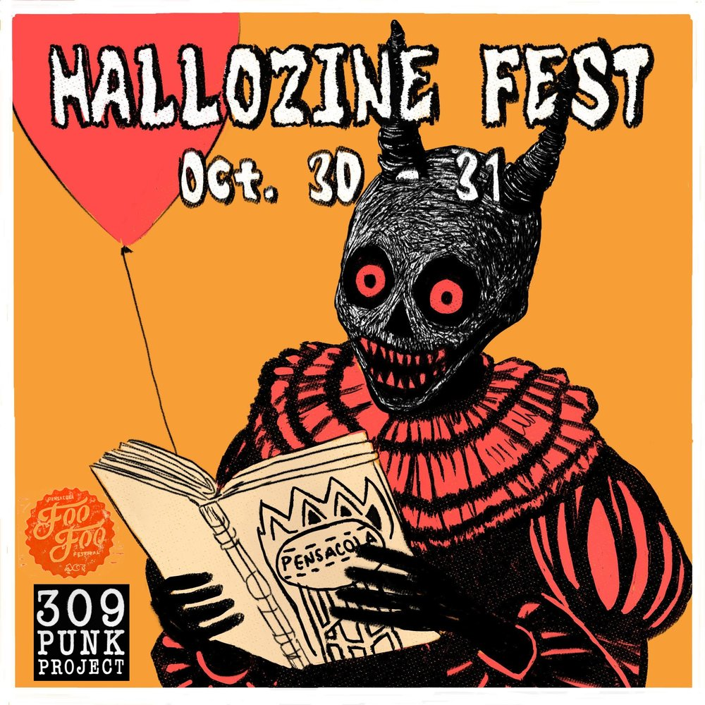

 THU OCT 30from the archive HalloZine Fest 2025 hallozine fest 2025 Voices of Pensacola Multicultural Center, 117 E Government St, Pensacola FL also that nightsilverada, the pink stones, gage cowart @ the handlebar open in mapsshare this flyerthe archive ↗